10分钟读懂：匈奴、鲜卑、回鹘、契丹、党项、女真……
水煮百年 2018-08-13 14:09:27
匈奴、东胡、突厥、回鹘、蒙古、契丹、女真、鞑靼、鲜卑、羌、党项、乌苏、柔然、哈萨克……
这些游牧民族，你可能甚至不会读～但是它们不停的出现，所以下面的介绍，绝对值得你收藏！
从商周时代开始，匈奴和东胡就存在了，他们的位置大概是这样的：
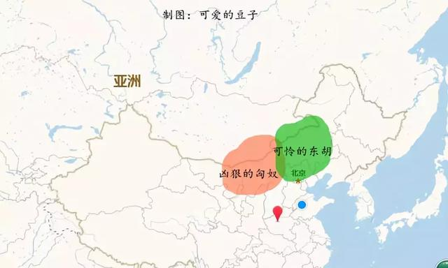
然后匈奴把东胡干了。情况是这样的：
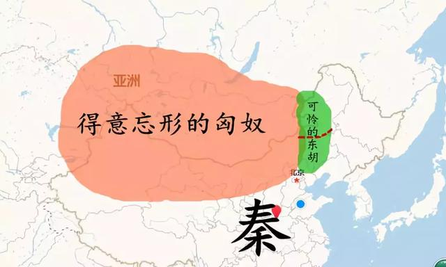
东胡好可怜！由于遭受得意忘形的匈奴的打击，变得分裂，分裂成了两部分，鲜卑和乌桓：
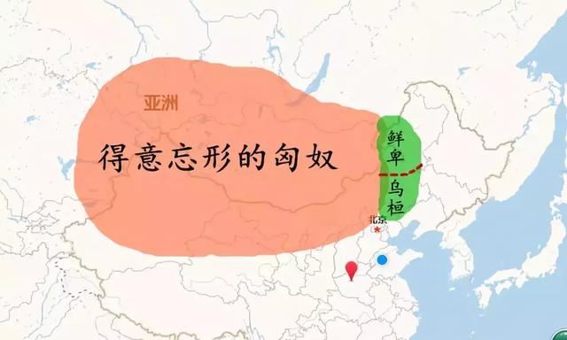
终于，强大的汉王朝来了！结果就成了这样：
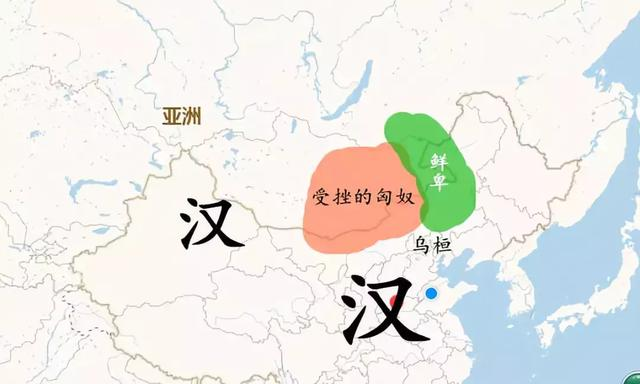
汉朝时，匈奴分裂成为南匈奴和北匈奴，这就好比南朝鲜和北朝鲜，你把汉朝当美国就行了，南匈奴是汉朝离间来打北匈奴的，俗称匈奴奸：
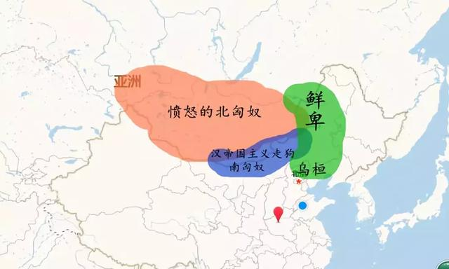
北匈奴宣传资料：
你每花一文钱买南人的粮食，都会变成敌人射向我们的弓箭！难道你们还想让我们在汉货上花的钱继续制成弓箭射进我们同胞的头颅里面吗？南匈奴那些拿汉人钱的傻逼，你们就是汉朝人养的一条狗！！！！
鲜卑说：
别哔哔了。
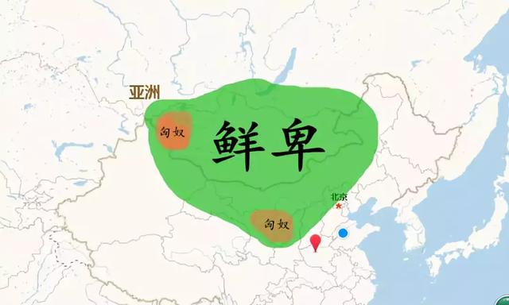
鲜卑势力变得异常强大，正是在东汉末年分三国时干的，毕竟中原内乱顾及不了他们，匈奴已经被弄得半死了，乌桓被曹操灭了，鲜卑反倒强大起来。
从晋朝到后来的五胡乱华时期，鲜卑分成了东、北、西三大部落。
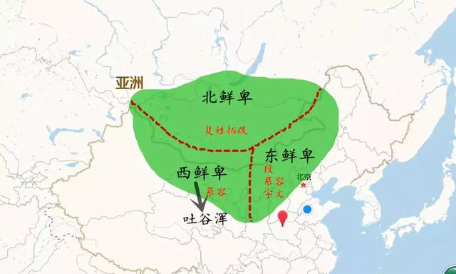
拓跋鲜卑其实就是北鲜卑。
鲜卑贵族慕容氏在西鲜卑和东鲜卑都很有地位，西鲜卑后来在慕容氏的带领下跑到青海东部安营扎寨，这就是赫赫有名的吐谷浑。鲜卑参与了晋朝之后的五胡乱华：
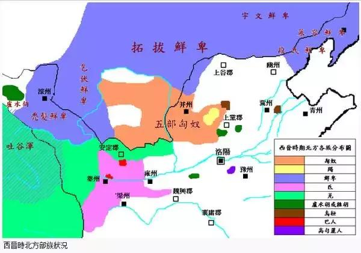
在上图中，吐谷浑就是西鲜卑的后裔。
鲜卑拓跋部创立了北魏，这就是南北朝中长江以北的王朝，北魏一直跟柔然死磕。那也是没办法的事情，柔然原本隶属于鲜卑拓跋部，是拓跋的奴隶，成天干苦力，后来拓跋南迁，小柔然也就闯荡成了大柔然，并跟原来的主人掐起了架。
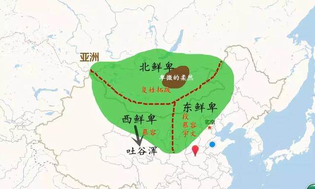
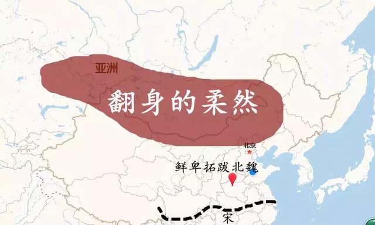
在南北朝时期，柔然也有了自己的奴隶，常常对奴隶拳打脚踢。
负责给柔然炼铁的部落，是突厥部落，被唤作“煅奴”，意思就是打铁的奴隶，十分卑微。当时的情况是这样的：
后来的事情你也知道了，突厥把柔然灭了：
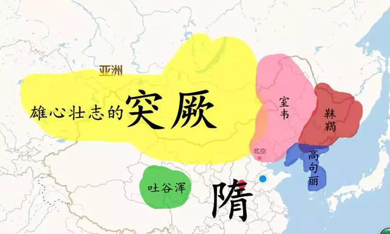
注意，这个室韦不是突然出现的，有人认为室韦的发音其实就是鲜卑，鲜卑-森被-室韦。如果的确如此，那么室韦显然就是鲜卑后裔了。因此多数观点认为，室韦主体就是鲜卑，本源一定是东胡。
再说靺鞨，靺鞨其实一直也都存在，一直在中国东北生存。周代、秦朝、西汉时，被唤作肃慎，东汉到魏晋谓之挹娄，南北朝称勿吉，隋唐时叫靺鞨。
因为大突厥汗国分裂了，这得益于隋朝文臣的离间计，总之，分裂了，分裂成了东西两部分，就是东突厥和西突厥。
情况是这样的：
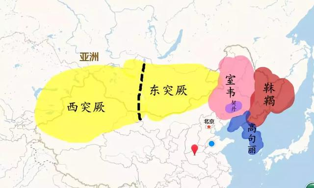
原本突厥可以很牛的。可惜南面的隋朝灭亡了以后，迎来的是唐朝。再想南下捞一把，是不可能了。反而被唐朝一窝端，被一窝端的，还有高句丽等等。
于是情况变成了这样：
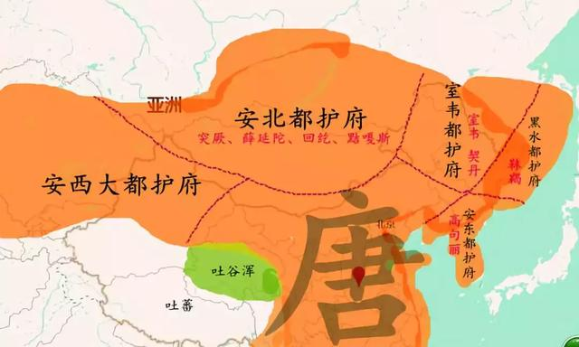
然而突厥后来复国了，不过这次复国，突厥内部的部落已经有很多势力。
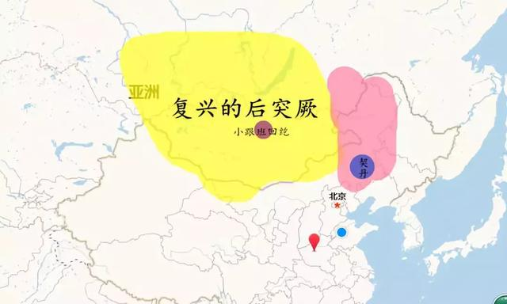
为了遏制后突的嚣张气焰，在唐帝国主义伟大领袖玄宗李隆基同志的亲切关怀下，回纥（后来叫回鹘）发誓要跟李老板混，并在李老板的大力支持下把后突给干死了，建立了回鹘汗国。
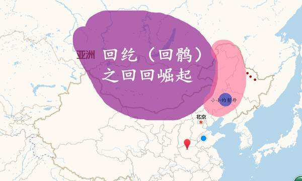到了唐末，事情就坏了。
想想吧，想想李存勖他爹临死前跟他说过的话。在五代十国之前，契丹已经崛起了。而回鹘，则被撵到了西边。
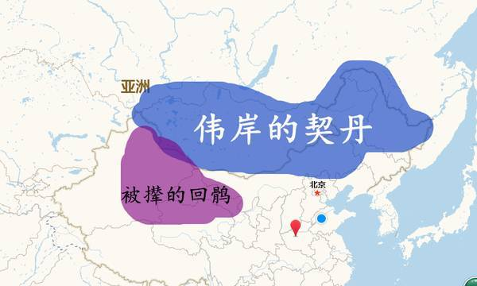被撵到西边避难的回鹘，意志力坚强的回鹘，怎么可能在这种地方就放弃呢？
经过一系列的斗争，回鹘分成了三大部：
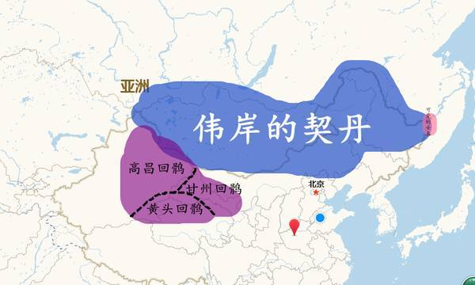注意，高昌回鹘就是西州回鹘，西州回鹘就是畏兀儿，畏兀儿就是维吾尔。
为什么？
回鹘--畏护--畏兀儿--维吾尔
发音都一样，只是写法不一样。
好了，我们知道，契丹继续壮大，建立了辽朝。
与此同时，南面是宋朝。
请回顾上一幅图，注意中国东北角那一坨粉红色的可爱印记，是的，那是女真，人家原来是黑水靺鞨，靺鞨的祖先是肃慎，是挹娄，是勿吉。
他们没死。
他们还活着。
好顽强！
还特别能生。
最终，他们和契丹、宋朝撕逼，建立了金朝。
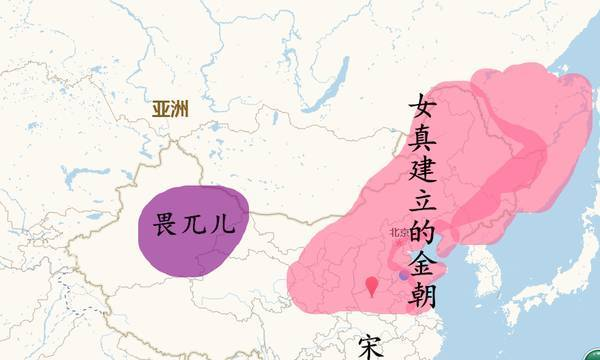然而……
曾经，突厥征伐烧杀的时候，作为柔然底下的两个小部落被灭族了，他们分别是乞颜部落和捏古思部落。他们只剩下两男两女，跑到了远方定居。但就是这几个人，在外兴安岭以南休养生息，逐渐壮大，被称为蒙兀室韦。
回想一下吧！
回想一下回鹘崛起时的画面：
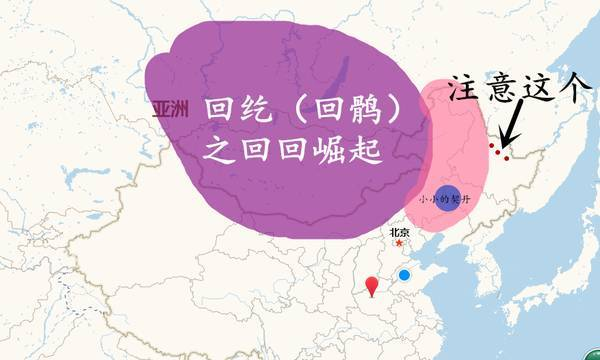上图中的红点，代表蒙兀室韦，是室韦的一支，也就是说，他们的祖先，往上推是鲜卑，再往上推是东胡。
接下来，蒙兀室韦干了啥事儿，大家都知道了。
蒙兀，就是蒙古。
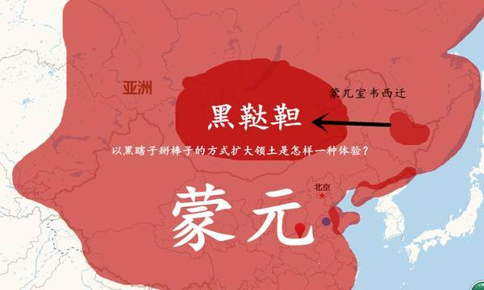室韦在突厥语中发音就叫鞑靼。
蒙兀室韦，又称黑鞑靼。
这不是乱讲，因为是宋朝到辽朝期间用来黑他们的。
的确很野蛮。
所以汉化程度高的，就被唤作白鞑靼或熟鞑靼，汉化程度低的，就叫黑鞑靼或生鞑靼。
蒙兀室韦的领袖，也就是铁木真他爷爷，建立了蒙兀国，蒙兀国就是蒙古帝国的雏形。
蒙元时期，南方百姓是没地位的。
可以这么看：
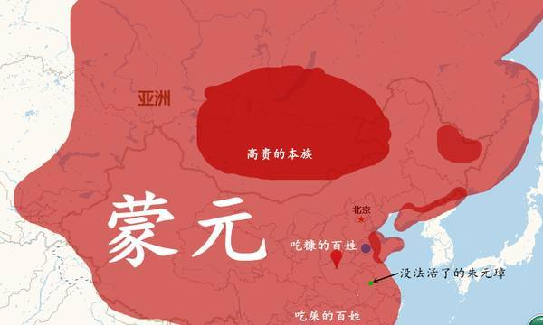所以没法活了的百姓闹了革命。
注意上图中那个存在于濠州的绿点。
他建立了明朝，明朝把蒙古撵了回去。
情况是这样的：
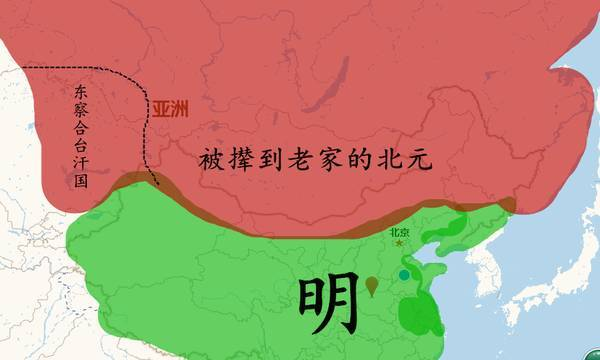后期的北蒙，分裂为鞑靼和瓦剌。
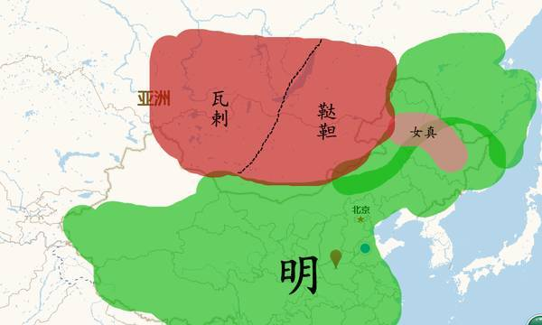明初揍鞑靼，导致瓦剌有发展机会。
瓦剌发达后，一度南下跟明朝干仗，发生了驰名历史的土木之变。
瓦剌后来分裂成了四大部：
杜尔伯特（绰罗斯氏）
准噶尔（绰罗斯氏）
和硕特（成吉思汗二弟合撒儿之后）
土尔扈特
准噶尔强暴了其他部落，霸占了天山南北。
与此同时，女真再度崛起，建立后金。
入主中原，名为大清。
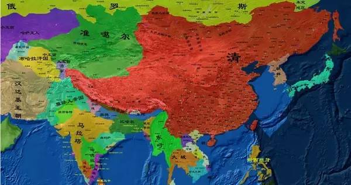（本图源自网络）
至于说哈萨克，那是蒙古帝国四大汗国（窝阔台汗国、察合台汗国、金帐汗国、伊尔汗国）中的金帐汗国分离出来的。哈萨克汗国后来分裂成了大玉茲、中玉茲、小玉茲，一直受准噶尔的欺负。准噶尔后来被清朝灭了，但此前由于太委屈，小玉茲和中玉茲都加入了俄国阵营，只有大玉茲加入了清朝。
清和俄也撕逼，这个大家都知道。
俄罗斯，原本是东欧地盘上的种族，一开始中原王国只有元朝跟它接触过，被叫做“斡罗思”，其实就是俄罗斯。
它扩张的情况是这样的：
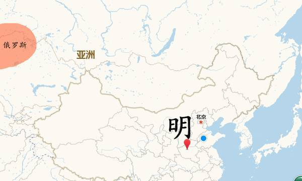 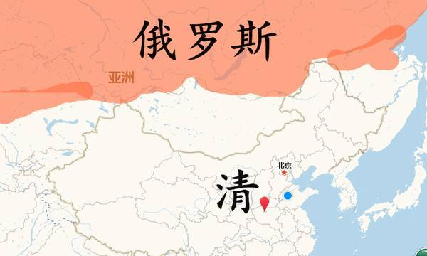来源公众号历史教师王汉周 lishi139